Bash Commands⚓︎
Use this sheet to test yourself! Click the box for unfolding.

ls⚓︎
ls
Check the components in the current directory.
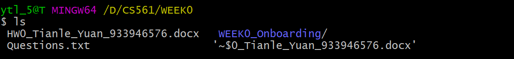
ls -a
Check the components in the current directory; with hidden components.

ls -l
Check the components in the current directory; with detailed information. The authority meaning of the first column:

cd⚓︎
cd
(default) Go back to the root home directory of the current user.
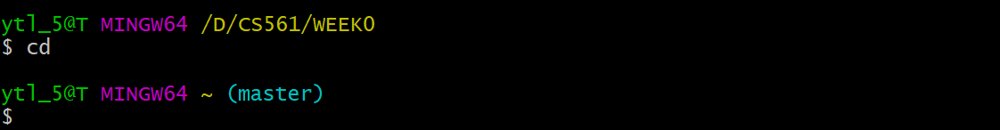
cd ~
Go to the root home directory of the current user.

cd /
Takes you back to the root directory of the current drive. 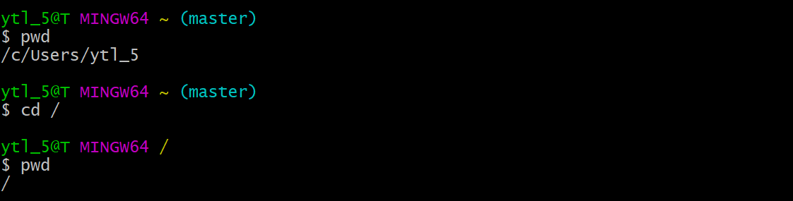
cd .
Go to the present working directory.

cd ..
Go to the parent directory.

pwd⚓︎
pwd
Present working directory.

grep⚓︎
grep
Search a string in a given file.
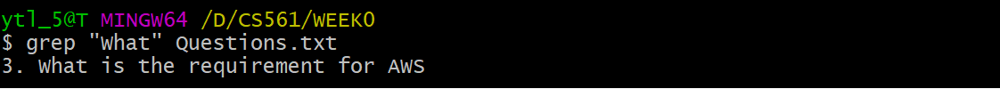
grep -i
Search a string in the file directory, with case-insensitive. The output will mix both up & low -case results.
The case below will search: What, WhaT, wHAt, wHat, .etc.

grep -r
Search a string from all files in the current directory (or in a given file if send the parameter) and in all of its subdirectories.

chmod⚓︎
chmod
Set authority for the given file.
Note that: there are two ways to use chmod. For example, chmod 644 <filename> and chmod u+rw <filename>
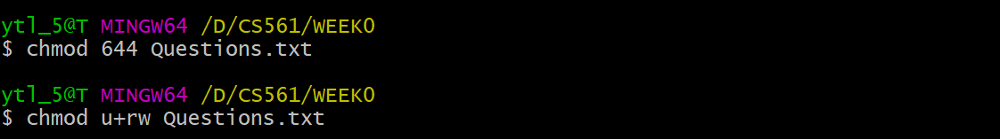
| Person | user | group | other |
|---|---|---|---|
| Decimal | 6 | 4 | 4 |
| Binary | 110 | 100 | 100 |
| Meaning | rwx | rwx | rwx |
| Person | u | g | o |
|---|---|---|---|
| Meaning | user | group | other |
| Verb | + | - |
|---|---|---|
| Meaning | add | remove |
| Behavior | r | w | x |
|---|---|---|---|
| Meaning | read | write | excute |
find⚓︎
find . -name <filename>
Find file with the given name in the current directory.

history⚓︎
history
Check command using history.
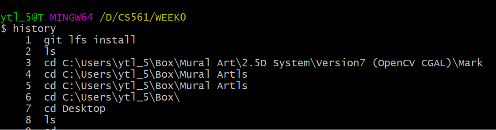

Pip (|)⚓︎
| -- pip operator
Combine two or more commands.
e.g. I want to use history and grep ls in sequence. I use history | grep ls
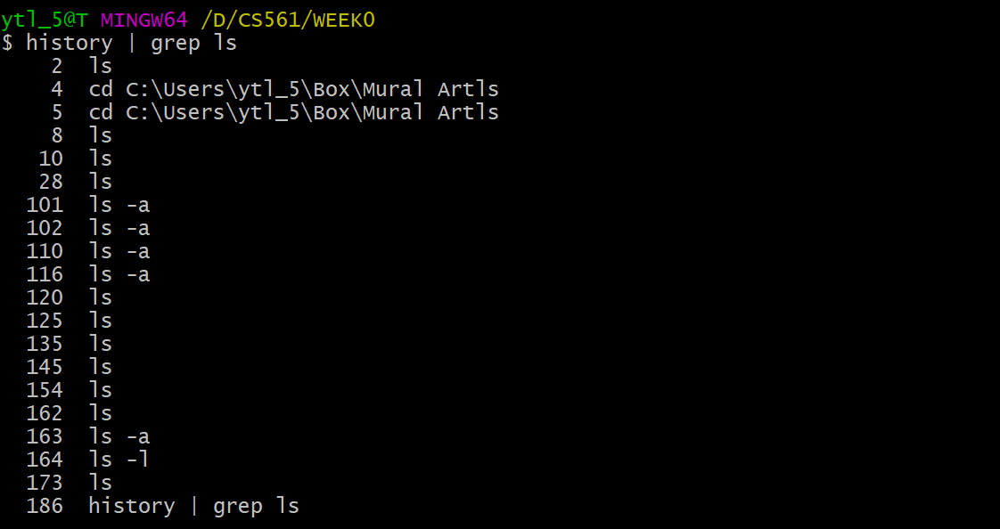
Output Redirect (>)⚓︎
> -- output redirection operator
Redirect the contents of a command/file to another by overwriting it.
e.g.
I want to save the output of history | grep ls in the file output.log. I use history | grep ls > output.log.
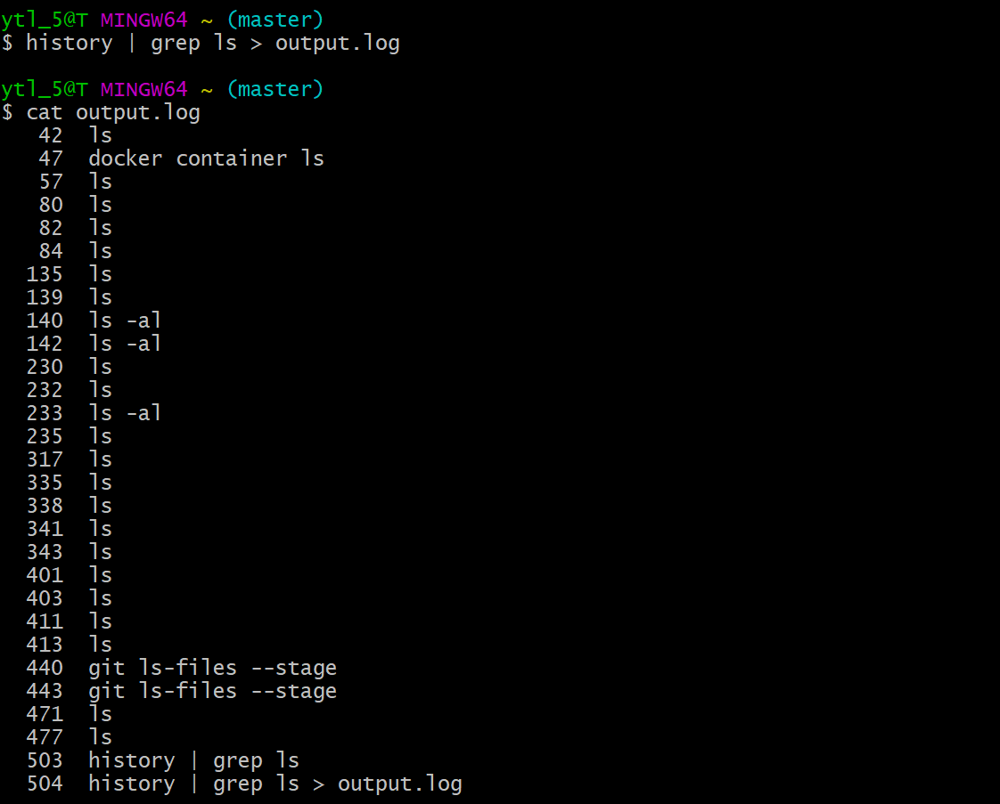
cat⚓︎
cat
Print the content of a file onto the standard output stream.
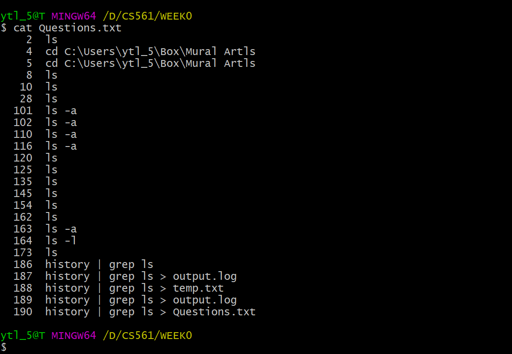
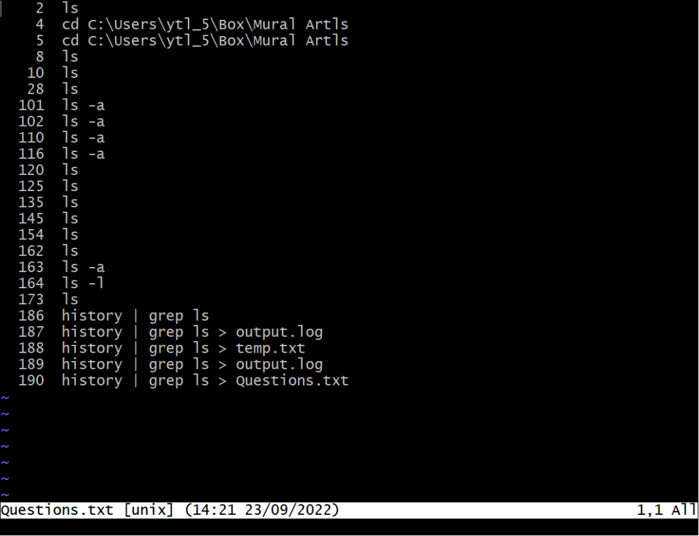
cat is primarily used for displaying the entire contents of one or more text files in the terminal.
less is a pager utility designed for viewing and navigating through large text files or long outputs that don't fit on a single screen.
man⚓︎
man
The function of man is like --help(in GitBash). It shows the manual pages for a command.
e.g. I want to check less command using manu:


more, less, most⚓︎
more, less, most
The three commands are used to view the text files in the command prompt, displaying one screen at a time in case the file is large (For example log files).
- Support
forward navigationandlimited backward navigation.
- Support both
forward navigationandbackward navigation. - Has
searchoptions. - Can go to the
beginningand theendof a file instantly. - Can switch to an
editor(like opening the file inviorvim).
Arrow keys: Scroll up and down.
/: Start a forward search.
?: Start a backward search.
n: Move to the next search result.
N: Move to the previous search result.
q: Quit the less viewer.
It is noticeably quicker than editor when the file is large.
- Has
allthe features ofmoreandless. - Can also open
multiple files, close 1 file at a time when you have multiple files open. - Allows
lockingandscrollingof the open windows. - Allows for
splittingof open windows.
alias⚓︎
alias
Create a shortcut that references a command.
e.g. Create a shortcut for ls -la as ll: alias ll="ls -la"

unalias⚓︎
unalias
Remove alias.
Note
unalias not only remove the alias from the current session but also remove them permanently from shell's configuration file.
echo⚓︎
echo
A built-in Linux feature that prints out arguments as the standard output. Example see in PATH.
which⚓︎
which
Use to identify the location of executables.

PATH⚓︎
PATH display
By using echo $PATH.
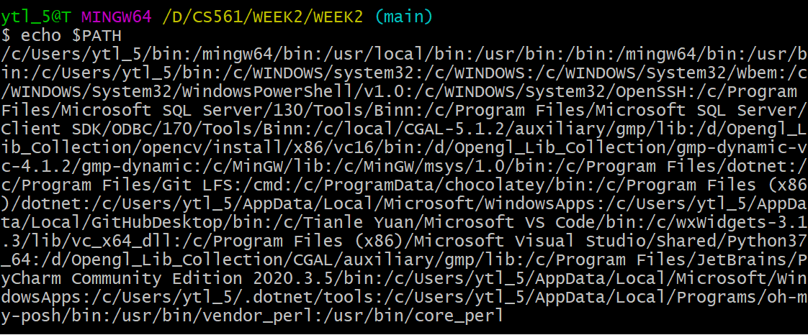
PATH edit
Q: How to make scripts execute from the present working directory without having to type a ./ before the script's name (e.g. hello instead of ./hello)?
A: ./ executes files that are not in ${PATH}, “.” means it directly execute file in the current directory. Thus, we need to add hello’s absolute directory in ${PATH}, such as:
PATH DEFAULT=${PATH}:/path/to/helloln⚓︎
ln -s
Create a soft link for an existing file.
Grammar: ln -s <a: original file> <b: soft link file>
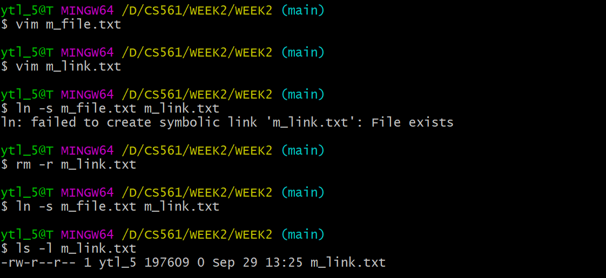
We can use rm -rf <b> to delete the soft link.
Background Processing (&)⚓︎
&
For example, launching Node.js using node app.js & vs. node app.js
Use the background process can help to keep the process running without terminal effects. However, a foreground process will be killed when we close the terminal.
code⚓︎
code
Open VS Code to edit some file.
source⚓︎
source
source is used to read and execute the content of a file (generally a set of commands) right now instead of relaunching the shell. Those commands are passed as an argument in the current shell script.
Let's create a .bash_profile in the root directory:

Then execute the file:

Oh no! All the dependencies have gone! 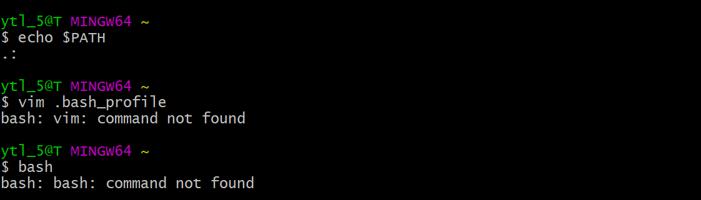
üòÜ Do not worry about it. Remove the code in .bash_profile and relaunch your shell. Then your shell will be brand new! (The theory see in next topic .bash_profile vs .bashrc).
There is another way to fix the problem: change export PATH=.: into export PATH=.:$PATH.
.bash_profile vs .bashrc⚓︎
.bash_profile v.s. .bashrc
When invoked, Bash reads and excutes commands from a set of startup files, which is read depending on whether shell (command explainer) is invoked as [interactive/non-interactive] or [login/non-login] shell.
| Shell type | interactive | non-interactive | login | non-login |
|---|---|---|---|---|
| Example | terminal (shell read, write) | non-terminal (execute a script) | remotely (via ssh) | locally |
For: Interactive log-in shell.
For: Interactive non-login shell.
Note!
The components you write in .bash_profile and .bashrc is just appending more works to the current default shell settings. It is not overlapping.
E.g. situations
- If you create an empty
.bash_profileand execute (usesource) immediately, it will make any changes to your shell's setting. - If you make any changes in
.bash_profileand execute it immediately, it will implement the changes in your shell. However, if you delete the code in.bash_profilefor the changes and restart shell, the shell will run as the original default.
Shebang (#!)⚓︎
#!
Bash commands can be used not only in command lines but also in scripts. The head of Bash script should mention using Bash shell with #!.
e.g: With #!/bin/bash, generate SHA hash for [A-Za-z0-9]: (More bashscript learning)
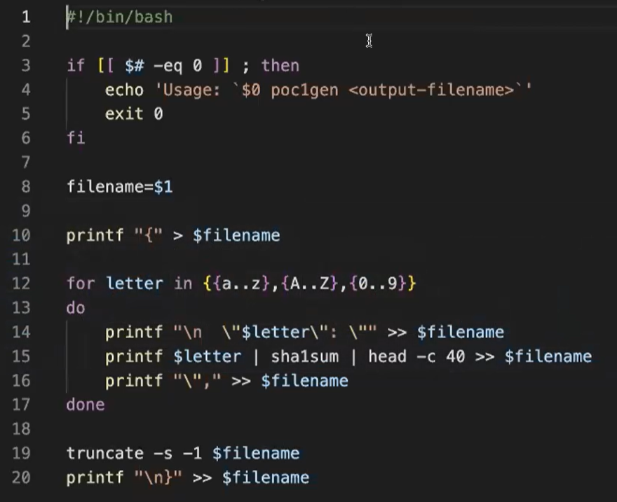
How to run a bash script?
There are two ways to run a bash script:
-
Use
source. Source it immediately! -
Make it executable with
chmod 7xx <script_name>. Then run it in any way below. Let's assume the script is namedDonow:- Add script path into
PATH. Then Run it with script name. e.g.:$ Donow - Run relative path. e.g.:
$ ./Donow - Run absolute path. e.g.:
$ <Path_from_root>/Donow
- Add script path into
sha1sum⚓︎
sha1sum
sha1sum is a cryptographic hash function. The algorithm transfer data into Checksum, which is convenient for confirming if your copy is the same as the original one.

folder⚓︎
mkdir
Create folder:
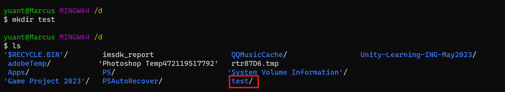
cp
-
To copy a file to another location:
cp <sourcefile> <destination>e.g. cp myfile.txt /path/to/destination/
-
To copy a folder and its contents recursively:
cp -r <sourcefolder> <destination>e.g. cp -r myfolder/ /path/to/destination/
mv
-
To move(cut) a file to another location:
cp <sourcefile> <destination>e.g. mv myfile.txt /path/to/destination/
-
To move(cut) a folder and its contents recursively:
cp <sourcefolder> <destination>e.g. mv myfolder/ /path/to/destination/
rmdir
Clear folder; rmdir only works on empty directories. If a directory contains files or subdirectories, rmdir will not remove it and will display an error message.

rm -rf
rm -rf is used for forcefully and recursively removing directories and their contents, including non-empty directories.
-fforce; delete without informing and ignore unexistant files/para.rrecursive; recursivly delete the directory and its contents.

du -h
Used to display the size of a directory or file.
-hhuman-readable; In units K, M, G, improve the readability of information.

disk⚓︎
df -T -h
Disk free (df); Check disk space usage:
-T: This option is used to display the file system type for each file system.
-h: This option is used to display sizes in a human-readable format (e.g., in gigabytes, megabytes, etc.) rather than in raw blocks.

fdisk -l
Fixed disk (fdisk); List disk partitions:
-l: This option stands for "list" and is used to list the partition table for all available storage devices.

mount
Mount Disk Partitions:
Grammar: mount -t <filesystem_type> <device> <mount_point>
<device>: This should be replaced with the device or partition you want to mount. It can be specified as a device file, such as /dev/sda1, or a UUID (Universally Unique Identifier) for the device.
<mount_point>: This should be replaced with the directory where you want to mount the file system. This directory should already exist. For example, if you want to mount the file system on a directory called /mnt/mydata, you would replace
-
Mount an ISO9660 file system (e.g., for CD/DVD):
mount -t iso9660 <device> <mount_point> -
Mount a VFAT (FAT32) file system:
mount -t vfat <device> <mount_point> -
Mount a ext4 file system:
mount -t ext4 <device> <mount_point>
umount
Unmount a specific device (replace
umount <mount_point>
Unmount all mounted filesystems:
umount -a
ZIP⚓︎
Compress
-
Compress a file or directory into a
.tar.gzfile:tar -czvf archive.tar.gz file1 file2 ... -
Compress a file or directory into a
.tar.bz2file:tar -cjvf archive.tar.bz2 file1 file2 ... -
Compress a file or directory into a
.zipfile:zip -r archive.zip file1 file2 ...
-c: This option stands for "create" and instructs tar to create a new archive.
-v: This option stands for "verbose" and makes tar display the names of the files it is archiving as it processes them. It provides additional information during the archiving process.
-f: filename.tar: This option specifies the filename of the tar archive that will be created. In this case, it will be named filename.tar.
-z/-j: For gzip/bzip2 compressed or decompressed algorithms.
-r: This option stands for "append." It instructs tar to add files or directories to an existing tar archive.
DeCompress
-
Extract files from a
.tar.gzarchive:tar -xzvf archive.tar.gz -
Extract files from a
.tar.bz2archive:tar -xjvf archive.tar.bz2 -
Extract files from a
.ziparchive:unzip archive.zip
Networking⚓︎
ifconfig
Display Network Interface Parameters: this command is used to display information about network interfaces on your system, including IP addresses, MAC addresses, and other network-related settings.

ping
Check Connectivity: the ping command is used to test network connectivity to a specific IP address (replace xxx.xxx.xxx.xxx with the target IP address). It sends ICMP echo request packets to the target and waits for responses, allowing you to check if a remote host is reachable.

netstat
Display Network Status: the netstat command is used to display network-related information. It provides various options to control what information is displayed:

-a: Shows all sockets (both listening and non-listening).
-l: Includes listening sockets.
-n: Displays numerical IP addresses instead of resolving hostnames.
-o: Shows additional information.
-r: Displays the routing table.
-t: Lists only TCP sockets.
-u: Lists only UDP sockets.
-w: Lists only raw sockets.
-x: Lists only Unix Domain sockets.
Process⚓︎
ps
The ps command is used to display information about running processes on the system.
-
To list processes for the current user:
ps
-
To list all processes on the system:
ps aux -

pgrep
The pgrep command is used to search for processes based on their names or other attributes and retrieve their PIDs (Process IDs).
top
The top command provides a dynamic, real-time view of system processes and their resource usage.
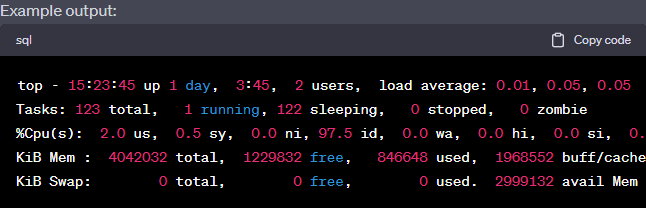
kill
use kill when you know the specific PID of the process you want to terminate.
kill 1234
use pkill when you want to terminate processes based on their names or attributes.
pkill myprocess